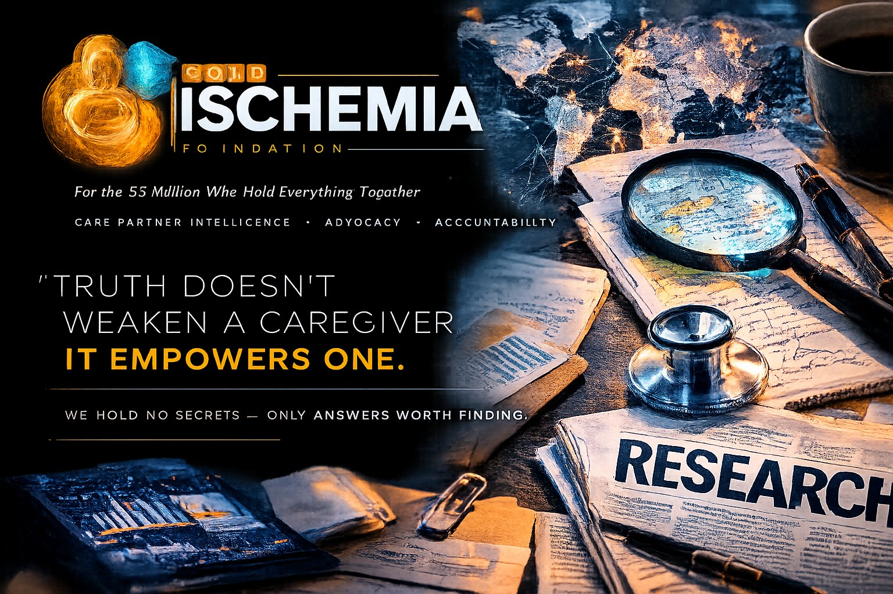

Live feeds from CMS, GAO, HHS, OIG, and the Federal Register — alongside original Cold Ischemia Foundation investigative documents.
Original investigative documents, white papers, legislative drafts, and advocacy guides produced by the Cold Ischemia Foundation. All documents are published without pharmaceutical funding or institutional approval.
| Document Title | Type | Date | Summary | Access |
|---|
The Federal Register feed is filtered for ESRD, dialysis, transplant, kidney, and care partner rules and proposed regulations. Items marked FED are active or proposed federal rules directly affecting your patient population.
These visualizations are not infographics. They are operational analyses — built using the same Lean Six Sigma methodology applied to quality and process failures in clinical research and manufacturing. Applied here to the most important quality failure in American healthcare: the systematic abandonment of 55 million care partners.
Every study below is a published, peer-reviewed work from a verified academic or institutional source. This is the evidence the federal agencies have access to. This is the data that justifies every policy demand Cold Ischemia Foundation makes.